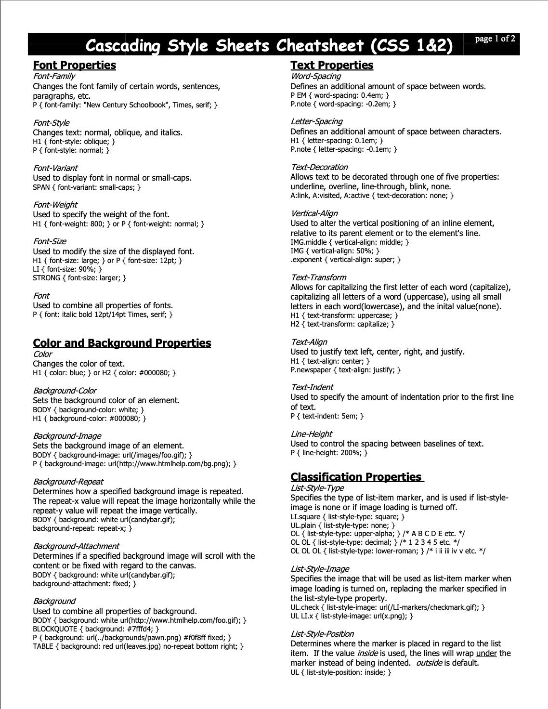
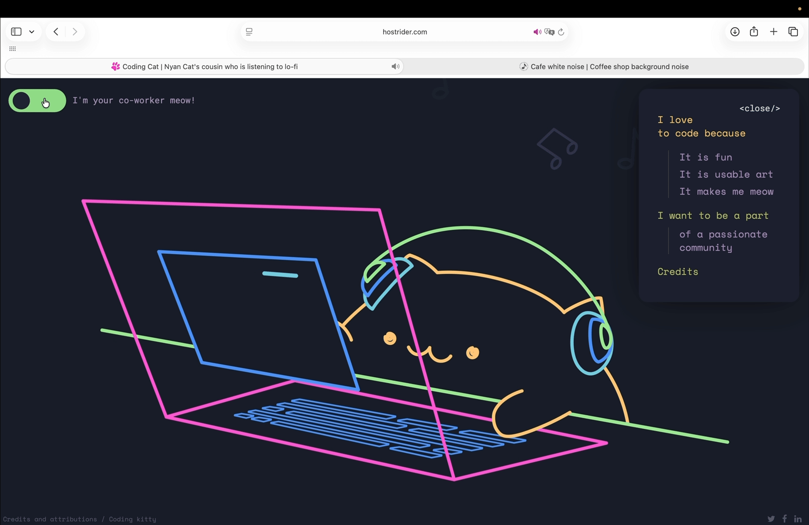

We created a working HTML file using separate tags XD!!!
CSS CHEAT SHEET

A quick reference guide for CSS properties and selectors; Go Visit
CASE STUDY

This is a cat‑themed interactive website with a design theme of personal virtual work companion. It provides soft, calming background music and cute cat sound effects.Users can click an on‑screen keyboard to trigger animations of the cat typing on a computer. The design is lightweight and non‑distracting, supporting productivity rather than interrupting focus. Go Visit https://hostrider.com